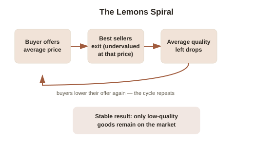

Chapter 1: The Lemons Problem — When Nobody Can Tell Good From Bad
Standard economics usually assumes both sides of a deal know roughly what they're trading — a buyer and a seller looking at the same car, the same house, the same job candidate. Most real deals don't work that way. One side almost always knows something the other doesn't: the seller knows how the car's actually been treated, the job candidate knows how hard they really work, the borrower knows how likely they are to repay. This is asymmetric information (a situation where one party to a transaction has relevant knowledge the other party lacks), and it turns out to be one of the most productive ideas in modern economics — productive enough that the three economists who formalized it split a Nobel Prize in 2001. This chapter covers the first and most famous result: that under the wrong conditions, hidden information doesn't just create a minor disadvantage for the uninformed side. It can make an entire market collapse.
Akerlof's used cars: why "average quality" isn't a price a good seller will accept
In 1970, economist George Akerlof published a short paper, "The Market for Lemons," using the used car market as a worked example. Split used cars into two types: peaches (genuinely good cars) and lemons (cars with hidden defects — the origin of the American slang term for a bad car). The seller of any given car knows which one it is. The buyer, looking at two similar-looking cars on a lot, doesn't — and can't tell peach from lemon just by looking, so the most a rational buyer will pay for any car is based on the market's average quality, not the specific car's actual quality.
That single fact breaks the market. Say peaches are genuinely worth $10,000 and lemons $4,000, and buyers correctly believe half the cars on the lot are each. A rational buyer offers around $7,000 — the average. But $7,000 is a bad deal for anyone actually holding a peach, so peach owners start leaving the market, unwilling to sell at a price that undervalues their car. That shifts the real average quality on the lot downward — now there are proportionally more lemons left — so buyers, sensing this, lower their offer further. That pushes out the next tier of peach owners, and the cycle repeats. Akerlof called this adverse selection (a process where the informed side's rational response to a price systematically removes exactly the sellers a buyer would most want to deal with): not a market with slightly lower average quality, but one that can unravel toward nothing but lemons being sold at all — a stable outcome where good cars simply aren't offered for sale in that market, even though buyers would happily pay a fair price for one if they could actually identify it.

It's not really about cars
Akerlof's point was never really about used cars — that was just the clearest illustration. The same structure shows up anywhere one side of a deal has private information about quality or risk that the other side can't cheaply verify. Health insurance for individuals (rather than through an employer group) is a classic case: people who know they're likely to need care are more motivated to buy coverage than people who know they're healthy, which pushes the insurer's average risk pool upward, which pushes premiums up, which drives out more of the healthy buyers who'd have made the pool cheaper — the same unraveling spiral, run on risk instead of car quality. Credit markets have the same shape: a lender who can't tell a reliable borrower from a risky one has to price the loan for the average borrower, which is a worse deal than a genuinely reliable borrower deserves, which can push the most reliable borrowers out of that lending market entirely.
Why this is different from just "buyer beware"
It's tempting to read this as a story about buyers getting cheated, but the more useful reading is structural: the problem isn't dishonesty, it's that even fully rational actors, with no bad intent on either side, can produce a market failure purely from the shape of who-knows-what. A seller offering an honest, fair price for a genuine peach isn't doing anything wrong — the market itself just can't distinguish their offer from a lemon owner's, so the honest offer gets punished by the same discount as the dishonest one. This is why the lemons problem is treated as a foundational result rather than a cautionary tale about scammers: it shows that markets can fail on pure information structure alone, independent of anyone's honesty, which is a much harder problem to fix than "don't lie."
The two questions this opens up
If hidden information can unravel a market on its own, two questions become urgent, and they turn out to have two genuinely different answers, which is why they get a chapter each. First: if you're the informed side — the peach owner, the healthy applicant, the strong candidate — how do you credibly prove your quality to someone who has every reason to be skeptical of your say-so? Second: if you're the uninformed side, how do you design the deal itself so that the informed side's own choices end up revealing what they know, even if they'd rather not tell you directly? The next two chapters take each of those in turn.
Try this
Ideas for noticing or testing this in your own life.
- Next time you're the buyer in a used-goods deal — a car, a phone, a piece of furniture, a freelancer's portfolio — notice what price you're actually implicitly offering: is it based on this specific item, or on your best guess at the average quality of everything that looks like it?
- Think of a market you personally avoid because you can't tell good from bad ahead of time (a service industry, a category of product, a type of advice) — that avoidance is the lemons spiral working exactly as the model predicts, one buyer at a time.
Worth pulling on?
A few loose threads from this chapter — if any of these genuinely grab you, that's a good sign of where to go next.
- Asymmetric information isn't only a source of market failure — it's also a direct source of negotiating power for whoever holds it. → Already in the library: Leverage and Income covers how information asymmetry translates into real bargaining leverage.
- The individual health insurance example here is a simplified version of a genuinely difficult, still-debated area of health economics and policy. → Not covered here — a natural place to go deeper if the insurance angle is what grabbed you specifically.